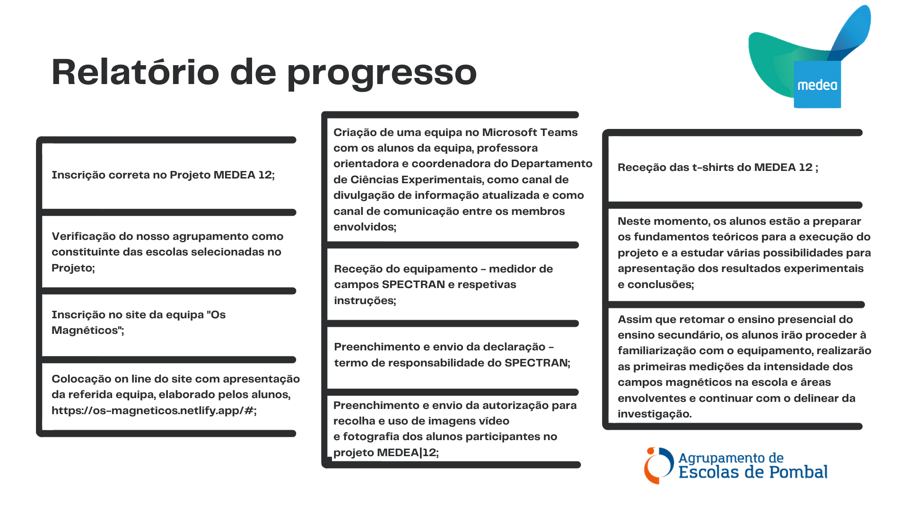

Os magnéticos
Projeto MEDEA 12
Quem Somos?
Somos um grupo de 5 alunos do 12º ano do Agrupamento de Escolas de Pombal. Voluntáriamo-nos para participar no projeto MEDEA. O Projeto MEDEA, numa parceria entre a SPF (Sociedade Portuguesa de Física) e da REN (Redes Energéticas Nacionais) visa medir o campo elétrico e magnético no meio ambiente.
A nossa equipa

Tomás Silva
Aluno do 12.ºB da Escola Secundária de Pombal, estudo na área das ciências e tecnologias especializando-me em Física e Química. Decidi entrar neste projeto com os meus colegas, pois desde cedo me fascino com a capacidade que a ciência possui em explicar a nossa realidade. Deste modo, com esta atividade pretendo aumentar o meu conhecimento no estudo do eletromagnetismo.

Hugo Gomes
Aluno do 12.ºB da Escola Secundária de Pombal, na área das ciências e tecnologias. Entrei neste projeto pois interesso-me pela física e acho que esta experiência irá ser enriquecedora.

José Silva
Aluno do 12.ºB da Escola Secundária de Pombal, na área das ciências e tecnologias. Participo neste projeto pois sempre fui um indivíduo bastante curioso, gosto de aprender coisas novas, quaisquer sejam elas. Espero expandir o meu conhecimento ao participar neste projeto.

Hugo Marques
Aluno do 12.ºB da Escola Secundária de Pombal, na área das ciências e tecnologias. Sempre gostei de física e entrei neste projeto pois acho que é sempre importante aprender conteúdos relacionados com física. Pois com ela conseguimos entender melhor como funciona o mundo que nos rodeia.

Eduardo Pais
Aluno do 12.ºB da Escola Secundária de Pombal estudo na área das Ciências e Tecnologias mais especificamente Física e Aplicações Informáticas. Entrei neste projeto porque sempre me interessei pela Física e estou ansioso por aprofundar os meus conhecimentos relativos ao eletromagnetismo.
A nossa professora

Sónia Couceiro Marques
Professora de Físico-Química há 23 anos, leciona a disciplina de Física na Escola Secundária de Pombal. O seu interesse pela divulgação científica levou ao lançamento deste desafio na participação dos seus alunos na 12ª edição do Projeto MEDEA.
